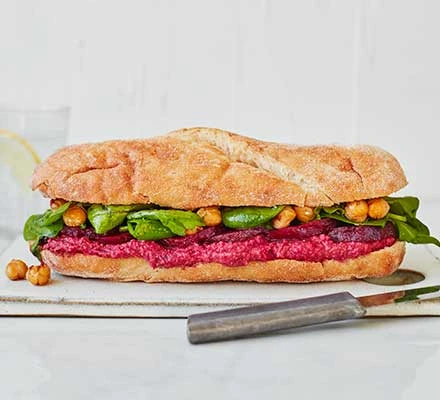

Crispy Chickpea Sub Sandwich

About :
Load up a sub with homemade hummus, beetroot,
chickpeas and salad to make this filling vegan sandwich.
An ideal lunch for when hunger strikes :)
Ingredients:
- 300g Pack cooked beetroot in water, drained, half sliced
- 400g Can chickpeas, drained
- 3 tbsp vegan pesto
- Olive oil
- Splash of vinegar (white wine vinegar if you have it)
- 2 Large ciabatta rolls, sliced in half
- 2 Large handfuls mixed rocket, watercress & spinach salad
Method:
Blitz the whole beetroot, ¾ of the chickpeas, 2 tbsp pesto and 1 tbsp oil in a food processor with some seasoning until you have a thick, smooth hummus.
Heat the ciabatta following the pack instructions
Fry the remaining chickpeas in a little oil until crisp, then set aside
Toss the salad leaves with the remaining pesto and a splash of vinegar.
Slice the rolls, then assemble the sandwiches with the hummus, beetroot slices, salad leaves and fried chickpeas.
Return to Top
Return to main page